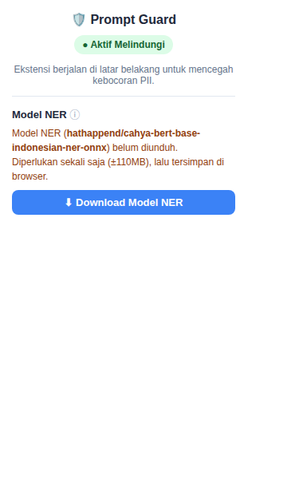
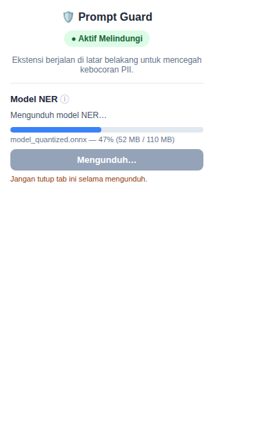
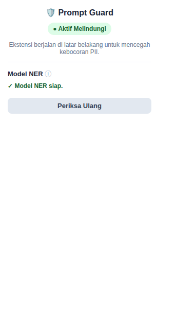
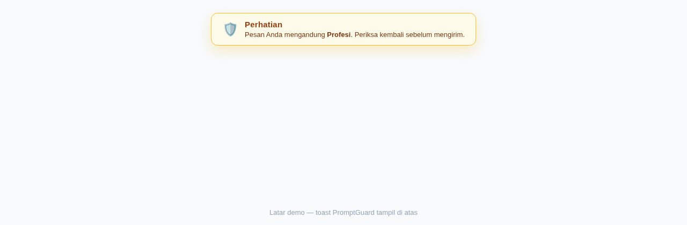
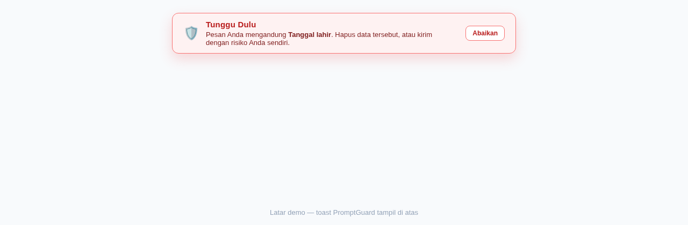
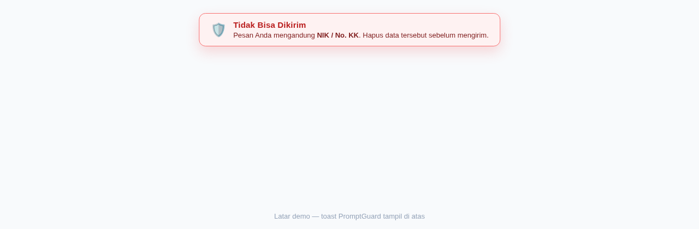

PromptGuard adalah ekstensi Chrome yang melindungimu dari kebocoran data pribadi saat memakai chatbot AI seperti ChatGPT dan Gemini. Setiap kali kamu mengetik atau menempel prompt, PromptGuard memeriksa apakah ada data pribadi di dalamnya — misalnya NIK, nama, tanggal lahir, atau nomor telepon — lalu memberi peringatan sebelum prompt terkirim.
Seluruh pemeriksaan berjalan 100% di perangkatmu; tidak ada teks prompt yang dikirim ke server mana pun.
PromptGuard menggabungkan tiga lapisan: pola untuk data berstruktur (NIK, nomor KK, dsb.), model AI (NER) untuk mengenali nama, lokasi, dan tanggal dalam kalimat, serta penilaian risiko yang menggabungkan temuan menjadi empat tingkat peringatan. Detail teknis metode ini didokumentasikan terpisah di dokumen skripsi, bukan di panduan ini.
PII-detection-extension di komputermu (hasil mengunduh/clone repositori).chrome://extensions di Chrome.PII-detection-extension.chatgpt.com atau gemini.google.com — ekstensi langsung aktif.chrome://extensions tidak dapat diabadikan di lingkungan penyusunan panduan ini. Kamu bisa menambahkan dua tangkapan layar (tampilan Developer mode dan daftar ekstensi) dari Chrome di komputermu sendiri.Model NER adalah komponen AI yang mengenali nama, lokasi, dan tanggal dalam kalimat. Model ini diunduh satu kali saja (±110MB), lalu tersimpan di browser.



| Tingkat | Tampilan | Arti & tindakan |
|---|---|---|
| Pass | Tidak ada peringatan | Tidak terdeteksi data pribadi. Prompt aman dikirim. |
| Warn | Toast kuning “Perhatian” | Ada indikasi data pribadi ringan. Kamu tetap bisa mengirim, tetapi periksa kembali prompt-mu. |
| Redact | Toast merah “Tunggu Dulu” + tombol Abaikan | Data pribadi terdeteksi. Tombol kirim dinonaktifkan dan Enter diblokir. Hapus data tersebut dari prompt, atau klik Abaikan jika kamu sadar akan risikonya. |
| Block | Toast merah “Tidak Bisa Dikirim” | Data sangat sensitif terdeteksi. Prompt tidak bisa dikirim sama sekali — hapus datanya terlebih dahulu. |



Kamu bisa mencoba keempat tingkat peringatan dengan prompt berikut:
| Tingkat | Contoh prompt |
|---|---|
| Pass | Tolong jelaskan fotosintesis untuk anak SD kelas 5. |
| Warn | Saya bekerja sebagai dokter di rumah sakit. |
| Redact | Tanggal lahir saya 12 Mei 1998 |
| Block | NIK saya 3174051202900001 |
Toast tidak muncul padahal saya mengetik data pribadi?
Pastikan kamu berada di chatgpt.com atau gemini.google.com, lalu muat ulang (refresh) halamannya. PromptGuard menganalisis ulang teks yang sudah ada setelah refresh.
Unduhan model NER gagal?
Periksa koneksi internet, buka kembali popup, lalu klik Periksa Ulang dan unduh lagi.
Tombol kirim tetap mati padahal data sudah saya hapus?
Hapus datanya, lalu ketik satu karakter (mis. spasi) agar analisis berjalan ulang. Jika masih bermasalah, muat ulang halaman.
Apakah prompt saya dikirim ke server PromptGuard?
Tidak. Seluruh analisis berjalan lokal di browser-mu, termasuk model NER setelah diunduh.